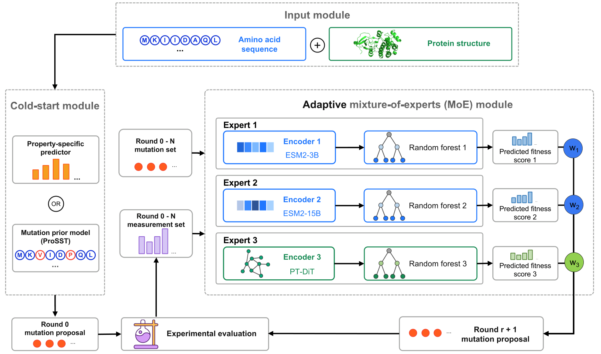
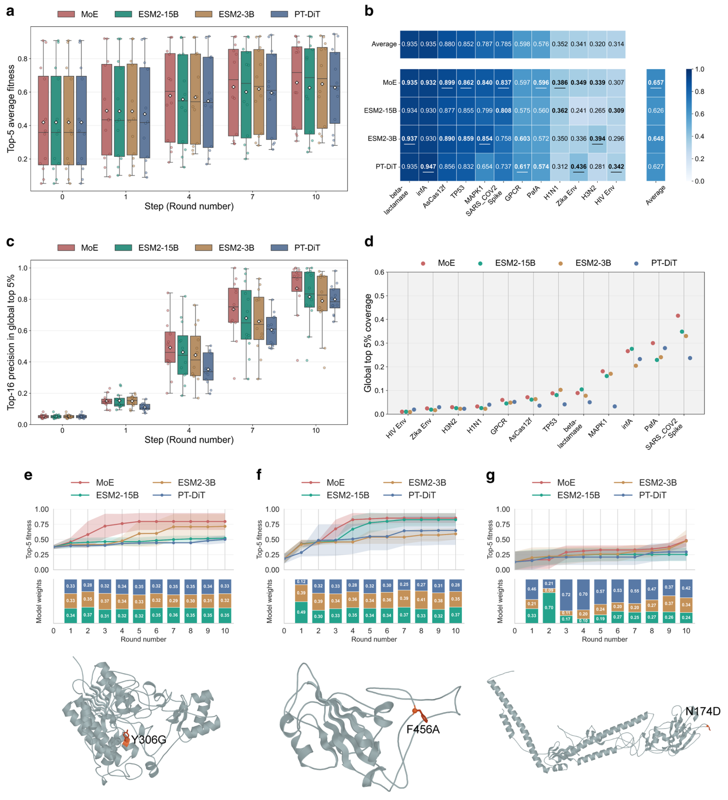
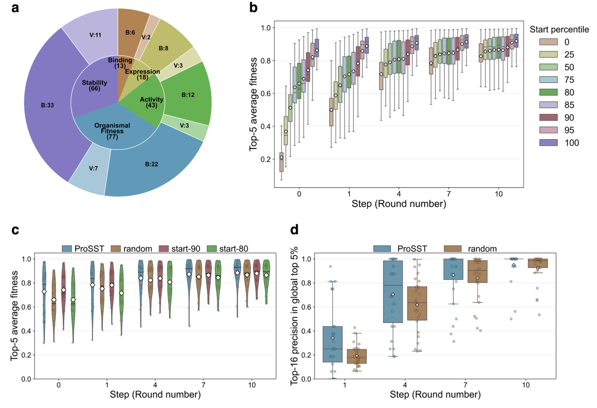
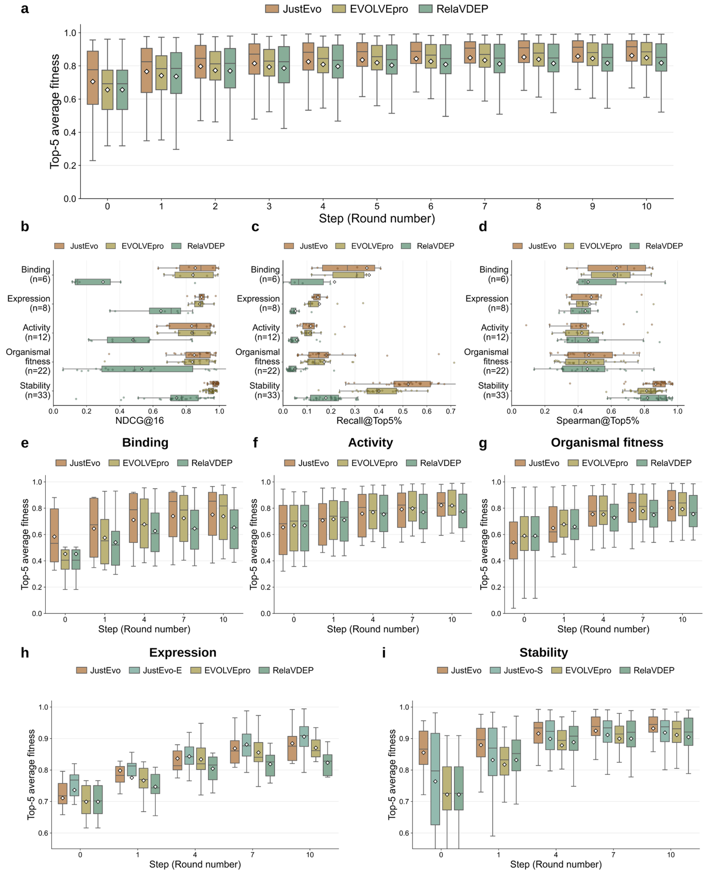
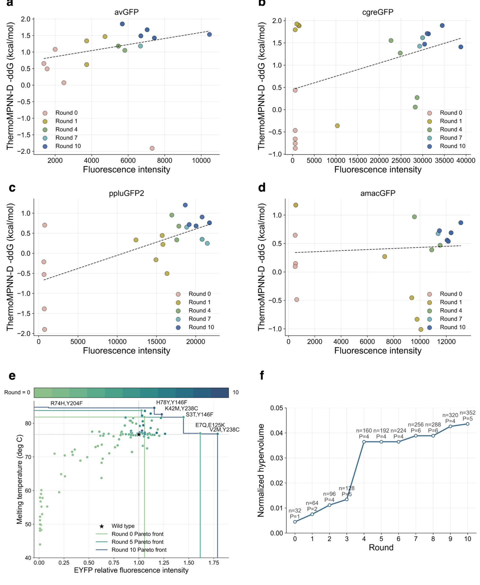

JustEvo：用先验、自适应专家与反馈选择更好的蛋白变体
论文原文 ↗JustEvo: A Prior-Guided Adaptive Mixture-of-Experts Framework for Multifunctional Protein Directed Evolution
Zhenyu Chen 等｜Journal of Chemical Theory and Computation，2026｜DOI｜
定向进化通过不断提出、测试和保留变体来改善蛋白性质，但序列空间庞大，每一批实验都需要谨慎选择。项目开始时往往没有足够的目标测量，多个预训练模型给出的建议也不相同；功能提升又需要兼顾表达和稳定性。JustEvo 将这三个问题接成一个闭环：用先验选择起始批次，随后根据测量反馈整合多个专家，再按单目标或多目标表现选择下一批变体。
方法怎样做：先选好起点，再随着测量更新模型
输入是候选蛋白序列及相应结构信息。没有目标专属测量时，结构感知模型 ProSST 给候选计算突变分数，选出排名靠前的 N 个作为初始批次。已有可靠的表达或稳定性预测器时，也可以用相应预测头完成这一步。这使首次实验能够利用预训练模型积累的序列与结构知识。

图1｜初始候选获得测量后，三个表示模型分别连接回归专家，再按当前反馈加权，选择下一轮变体。第一批标签进入后，每个候选分别由 ESM2-3B、ESM2-15B 和 PT-DiT 编码为数值向量。前两者提供序列表征，PT-DiT 还结合结构信息。三个冻结编码器各连接一个随机森林回归器；回归器根据已经测过的变体，学习当前蛋白的序列—性质关系。
这些回归器就是三个“专家”。JustEvo 比较各专家给出的排序与当前测量排序的一致程度，再转换成归一化权重。表现更贴合本轮任务的专家获得更大贡献。加权分数用于排列未测候选，选出下一批；新标签加入后，回归器与权重随之更新。不同蛋白、不同优化阶段可以依靠不同表示，从而适应不断变化的搜索区域。
主要结果：专家整合与先验初始化分别提高选样效率
作者先在 12 个深度突变扫描数据集上，使用相同随机起始批次比较专家混合与单一表示。深度突变扫描提供大量变体的实验性质，用来模拟每轮只查询少量标签的选样过程。第十轮，已选变体中最优五个的平均归一化适应度，混合专家为 0.657，三个单表示模型为 0.648、0.626 和 0.627；混合专家在 12 个数据集中的 10 个进入前二。

图2｜相同起点下的逐轮优化结果，以及三个蛋白实例中专家权重随反馈的变化。随后，作者把 ProteinGym 来源的 107 个数据集分成 26 个冷启动验证集和 81 个保留基准集。前一组用于选择起始策略：ProSST 初始化在第十轮达到 0.885 的最佳五变体平均分，随机初始化为 0.867。先验选出的首批样本为后续学习提供了更好的起点。

图3｜数据集组成及不同起始策略的比较。ProSST 利用序列—结构先验富集高适应度候选，并把优势带入后续轮次。在独立保留的 81 个数据集上，默认每批 16 个、初始批次加十轮选样，共查询 176 个变体。JustEvo 最终最佳五变体的平均归一化适应度为 0.862，EVOLVEpro 与 RelaVDEP 对照分别为 0.849、0.818。将 JustEvo 改成随机初始化，结果为 0.853，说明专家整合和先验起点都对最终表现有贡献。不同性质还可以使用不同冷启动头：表达专属头进一步改善了表达任务。

图4｜81 个数据集的总体及分性质结果，覆盖结合、活性、个体适应度、表达与稳定性。多目标优化：让亮度与稳定性一起进入选择
面对两个目标，JustEvo 为每个目标分别训练代理，分别对未测变体排序，再将两个名次相加，选择联合排名更好的候选。这样可以在亮度和稳定性两种不同量纲之间组织取舍。
作者先在四类 GFP 变体库上测试这一策略，使用实验荧光值和 ThermoMPNN 系列给出的稳定性预测。随着迭代，选出的变体逐步向亮度与预测稳定性都更好的区域移动。接着，在约 11 万个 EYFP 变体的实验测量库中，以荧光和表观熔解温度 Tm 为两个目标，按轮揭示所选变体的标签，进行双目标优化。

图5｜前四幅展示 GFP 的荧光—预测稳定性变化；后两幅展示 EYFP 已测性质空间中的帕累托前沿及覆盖面积。EYFP 每批选择 32 个，累计查询 352 个变体。帕累托前沿表示一组各有优势、无法同时在两个目标上被其他候选超过的折中方案。以野生型为参考，前沿覆盖的归一化面积从 0.00448 增至 0.04360，增长 872.1%。作者得到的折中方案包括 1.45 倍荧光、81.8°C 表观 Tm 的变体，显示联合排序能够寻找兼顾功能与稳定性的候选。
研究贡献
JustEvo 将三个实用决策统一起来：目标数据很少时怎样开始，多个蛋白模型怎样随反馈分工，以及下一批候选怎样兼顾多个性质。其基准比较展示了这些环节在有限测量预算下的协同作用，为蛋白工程提供了一条从预训练先验走向目标专属、逐轮改进的选样路线。
原始摘要完整译文
机器学习引导的定向进化可以在变体进入实验测试前确定优先级，从而降低蛋白工程的实验负担。然而在实践中，许多项目开始时只有少量、甚至没有目标专属测量数据；它们需要决定如何利用异质蛋白模型提供的先验，并要求在功能提升与表达、稳定性等可开发性质之间取得平衡。这里，我们提出 JustEvo，一个用于低数据量、多功能蛋白进化的闭环框架。在获得实验测量数据之前，JustEvo 利用突变先验模型或性质专属预测器，提名信息丰富的首批实验候选。获得测量数据后，它基于多种蛋白表示训练代理专家，并根据各专家与当前实验适应度排序的一致程度，自适应整合其预测。我们使用源自 EVOLVEpro 的混合专家验证数据集，以及源自 ProteinGym、进一步分为冷启动验证集和保留基准集的深度突变扫描数据集合，对这些组件进行了评估。在包含 81 个适应度景观的基准集上，采用相同有限预算选样协议时，JustEvo 最后一轮的最佳五变体平均适应度高于 EVOLVEpro 和 RelaVDEP；三者的归一化分数分别为 0.862、0.849 和 0.818。我们进一步将 JustEvo 调整用于荧光蛋白优化这一多目标设计任务。在这一设定中，针对各个目标的代理模型根据候选在耦合性质上的预测联合表现对其排序。我们在四个计算模拟 GFP 景观和一个实验 EYFP 闭环项目中测试了这一扩展；JustEvo 扩展了荧光—稳定性的帕累托前沿，使帕累托超体积增加 872.1%。这些结果表明，协调先验引导的初始化、自适应混合专家整合以及目标感知的候选排序，可以改善有限测量预算下的蛋白变体选择。